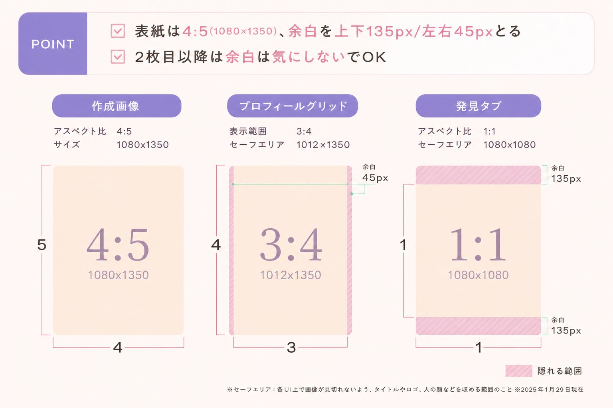
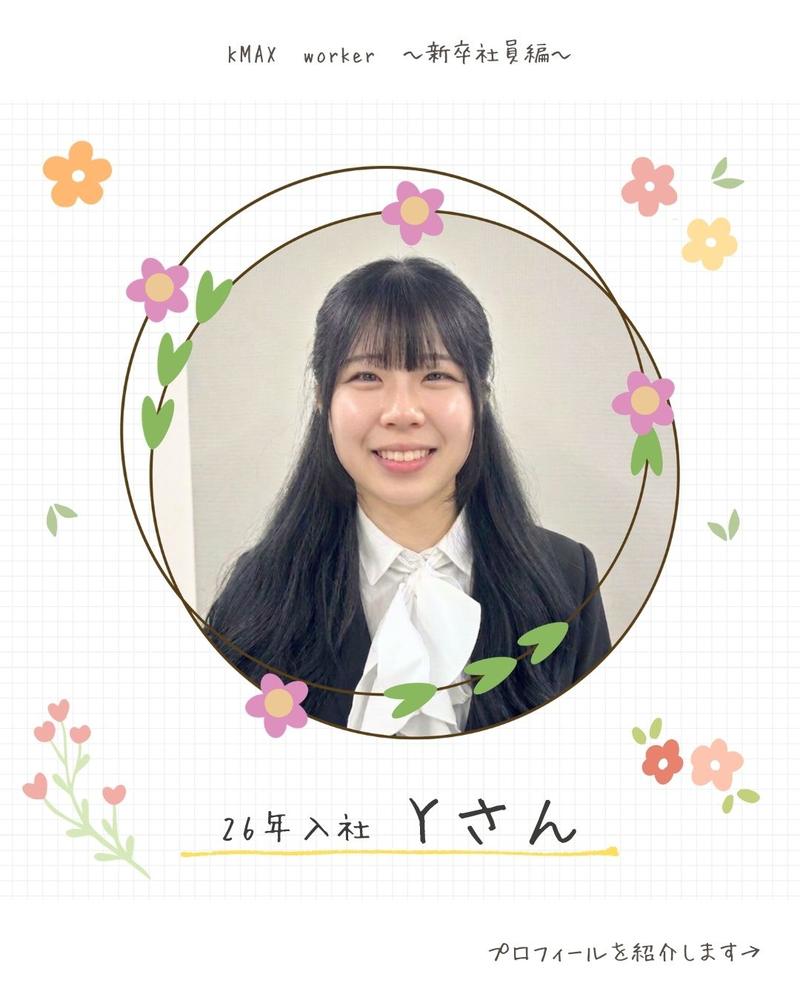
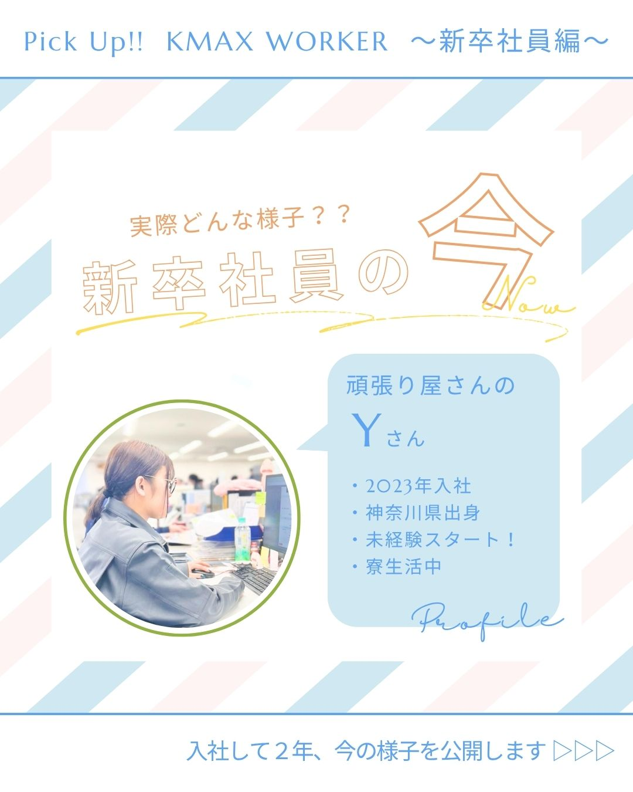
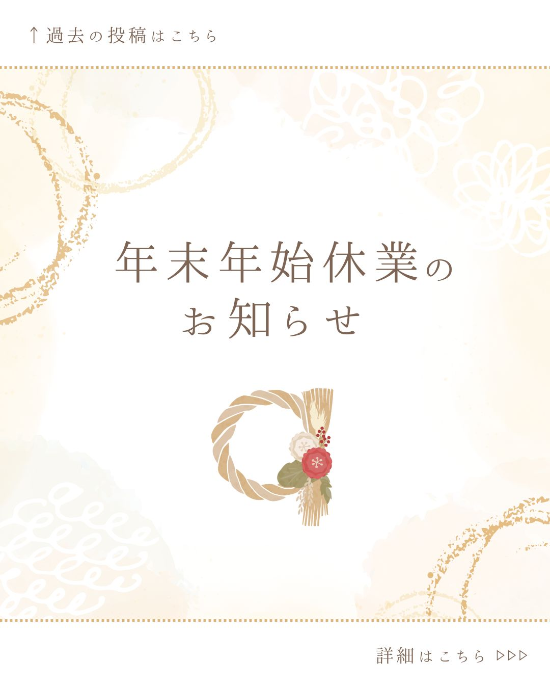
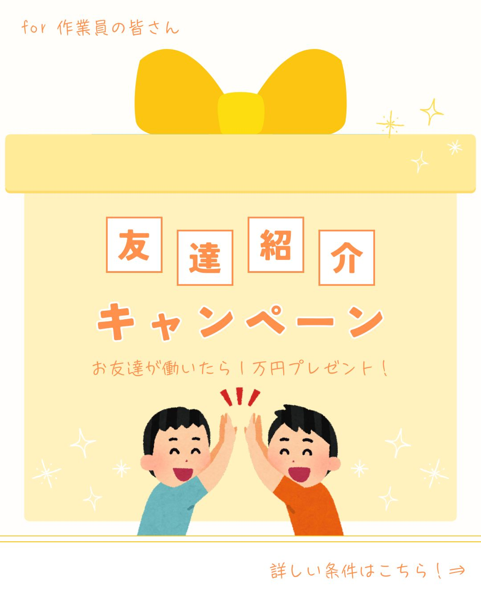
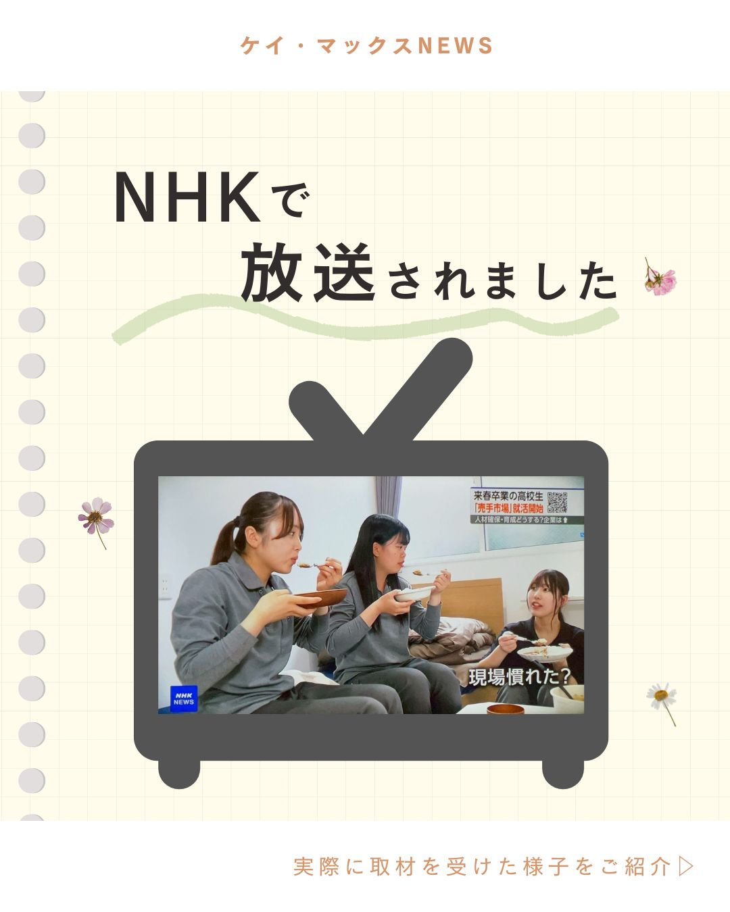
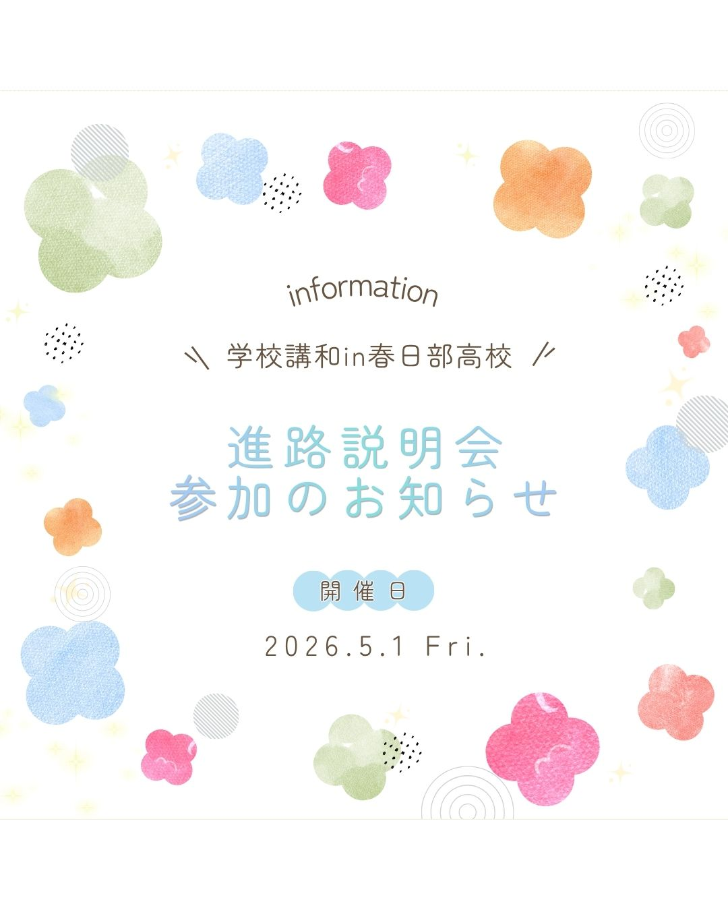

POINT 1
誰に届けるか
新卒・アルバイト・中途で伝え方を変える
POINT 2
見た目をそろえる
やさしい色・読みやすい文字・KMAXらしさ
POINT 3
公開前に確認
写真・文言・誤字・公開NG情報をチェック
POINT 4
投稿後も確認
表示サイズを整えてストーリーズにも共有
1
CHAPTER 01
Instagramの基本・良い投稿を観察しよう
Instagramってどんな場所？
Instagramは画像・動画を中心に発信するSNSです。テキストよりビジュアルが先に目に入るため、「魅せる」ことへの意識が特に重要です。求人票では伝えきれない「会社の雰囲気・社員のリアル」を届けることができ、高校生や若い求職者が「ここで働いてみたいかも」と感じてもらうことがゴールです。
投稿の種類
| 種類 | 特徴 | KMAXでの使用 |
|---|---|---|
| カルーセル | 複数枚の画像を横にスワイプして見る投稿形式。最大10枚まで設定でき、情報量を多く伝えられる | メインで使用 |
| リール | 縦型の短尺動画。フォロワー以外にも表示されやすく拡散力が高い | 状況に応じて使用 |
| ストーリーズ | 投稿後24時間で自動的に消える縦型の投稿形式。気軽な発信やお知らせのシェアに向いている | 随時使用 |
投稿サイズ

- 📝 最低文字サイズ：30px（それ以下は読みにくくなるため注意）
カルーセル投稿の基本構成（6枚）
1枚目
表紙
表紙
▶
2〜5枚目
中身
中身
▶
最終枚
最後のページ
最後のページ
内容によって中身のページ数は調整してOKです。基本は合計6枚構成。
良い投稿を観察しよう
投稿を作る前に、良い投稿を「なんとなく見る」のではなく、どこが良いのかを分解して観察します。見るポイントを決めておくと、デザインや言葉選びの感覚が身につきやすくなります。
COLOR
色は誰に向けた印象か
やさしい、信頼感、明るいなど、色が与える印象を確認します。
FONT
文字は読みやすいか
フォントの雰囲気がブランドらしさと合っているかを見ます。

実際の投稿例を見ながら、周囲のポイントを順番に確認します。
COVER
表紙で続きが見たくなるか
最初の1枚で興味を引けているか、理由まで考えます。
FLOW
最後まで流れがあるか
1枚ごとに伝えることが絞られ、最後に次の行動があるかを見ます。
2
CHAPTER 02
KMAXにおけるInstagram運用ルール
アカウントの目的と採用区分・ターゲット
@kmax_jpは採用SNSとして運用しています。対象とする採用は以下の3つで、それぞれターゲットが異なります。
| 採用区分 | 主なターゲット |
|---|---|
| 新卒採用（高卒） | 高校生・高校卒業予定者 |
| アルバイト採用 | 主に20代。フリーター・学生など。すでに在籍しているアルバイトさんも対象（紹介制度あり） |
| 中途採用 | 主に20〜30代の転職希望者 |
⚠️ 高卒求人の公開ルール
高卒の求人情報は、求人票が公開される日（毎年7月頭ごろ）まで投稿NGです。時期を誤ると法律違反となるため、必ず確認してから投稿してください。
どんな投稿をしているか（一部抜粋）
▽ KMAXで働く人の紹介

- 新卒入社の社員
- 入社○年目の社員
- 育児休暇を取得した社員
- アルバイトさん
- 社員さん
▽ 会社について


- 自己紹介・設立◎周年
- 社員研修の紹介
- アルバイト紹介制度の紹介
- 夏季・年末年始の休暇お知らせ
- 資格取得者の紹介
▽ 広報的内容


- 学校訪問・イベントの告知＆報告
- 取材の様子
- 会社見学の様子（新卒採用）
- 懇親会の様子紹介
デザインルール（トンマナ「トーン＆マナー」の略。色・フォント・言葉遣いなど、投稿全体の見た目と雰囲気の統一ルールのこと。）
| 要素 | KMAXのルール |
|---|---|
| カラー | パステル系・やわらかい色合いを基本とする。ぱきっとした原色は避ける |
| イラスト | 手書き風・水彩風のイラストを積極的に使用する |
| フォント | 読みやすい丸ゴシック系を基本とする |
| 雰囲気 | 親しみやすく・やさしい印象。堅すぎない表現を心がける |
フォントが与える印象
丸ゴシックやわらかく親しみやすい、読みやすい
明朝体上品・格式
手書き風カジュアル・温かみ
カラーと印象・用途
ブルー系
KMAXの会社カラー
信頼感・誠実さ
信頼感・誠実さ
グリーン系
安心感・成長
ピンク系
やさしさ・親しみ
イエロー系
親近感・明るさ
| カラー | 与える印象 | 向いている投稿 |
|---|---|---|
| ブルー系 | 信頼感・誠実さ・落ち着き | 会社紹介・制度紹介・企業PRなど |
| グリーン系 | 安心感・成長・フレッシュ | 新卒採用・求人情報・資格取得など |
| ピンク系 | やさしさ・親しみやすさ・温かみ | 社員紹介・アルバイト紹介など |
| イエロー系 | 親近感・明るさ・ポジティブ | お知らせ・記念日・イベント告知など |
投稿内容に合わせてカラーを選ぶことで、見る人に伝わる印象をコントロールできます。
写真・素材の入手方法
- LINEの「SNS素材」グループで共有された素材を使用する
- 素材が足りない・新たに必要な場合は若海さんに確認する
- 社員にインタビューしたい場合は、内容・構成を設計したうえで若海さんに相談する
写真使用のNGルール
写真を選ぶ際は必ず以下を確認してください。
- 社長の顔が映っている写真（入社式など集合写真は条件付きで要相談）
- 事務さん・菅沼さん・吹田さんが映っている写真
- 高校訪問・職場見学で生徒（未成年）の顔が映っている写真
- 現場の写真・他社のロゴや看板が映り込んでいる写真（顧客・関係者の許可がない場合）
- 個人情報・社外秘の情報が含まれる内容。氏名はすべてイニシャルで表記する。ヘルメットのネームシールは必ずぼかし処理をする（アルバイト・社員問わず全員対象）
投稿アイデアの進め方
- 担当者から投稿テーマ・指示があれば、それに沿って企画・制作を進める
- 指示がない場合は、自分でアイデアを考えて「こんな投稿はどうですか？」と小坂に提案する
- 社員インタビューが必要な投稿は、内容・構成を設計したうえで若海さんに相談する
3
CHAPTER 03
企画と準備
STEP 1｜素材と情報をそろえる
- LINEの「SNS素材」グループで使える素材を確認する
- 素材が足りない場合は若海さんに確認する
- 社員インタビューが必要な場合は、構成を設計してから若海さんに相談する
- 掲載する情報（日付・場所・求人内容など）が最新かどうか確認する
- 写真を選ぶ際は必ずNGルール（Ch.2）を確認する
STEP 2｜何を・誰に・どう伝えるかを決める
| 決めること | 考え方・目安 |
|---|---|
| 目的 |
この投稿で何をしたいか？目的に応じた指標（KPIKey Performance Indicator（重要業績評価指標）の略。目標の達成度を測る数値のこと。）で効果を確認する。 会社を知ってもらう → 1投稿あたりの閲覧数が前回投稿より ○%UP 応募につなげる → 1投稿あたりのプロフィール遷移数が前回投稿より ○%UP 施工管理希望者を増やす → 新卒入社者のうち施工管理希望者 8割 |
| ターゲット | 誰に届けたいか？ 例：高校生・保護者・転職希望者・フリーター |
| メッセージ | 一番伝えたいことは何か？1投稿1メッセージが原則。 |
| 切り口 | 共感・驚き・有益さ、どれで引きつけるか？ |
STEP 3｜構成を決める
Canvaを開く前に「何枚・各ページに何を書くか」をメモしておくと、制作中に迷わずに作業できます。
| ページ | 役割 | ポイント |
|---|---|---|
| 1枚目表紙 | スクロールを止め、続きを見たくさせる | 一瞬で内容が伝わるキャッチコピー＋「次が気になる」引きのある言葉選びを意識する |
| 2〜5枚目中身 | 詳しく・わかりやすく伝える | 1枚に1メッセージ。ページをめくるごとに興味が深まる流れを作る |
| 最終枚最後のページ | 次の行動に誘導する | フォロー・保存・応募などのCTACall To Action（行動喚起）の略。読んだ人に次の行動を促す一言のこと。「プロフィールのリンクをチェック！」など。を明記する |
4
CHAPTER 04
Canvaで画像を作成する
Canva使用上の注意（必読）
KMAXのCanvaは無料プランのため、有料素材は使用できません。素材を選ぶ際は「無料」マークのものだけを使用してください。
💡 過去の投稿を活用しよう
過去の投稿をコピーして使い回すと、サイズやデザインの統一が保ちやすくなります。ただしInstagramの仕様変更でサイズが変わる場合もあるため、状況に応じて判断してください。
作成手順
- Canva（canva.com）にログインする
- 新規作成、または過去の投稿を開いて「…」メニューから「コピーを作成」を選ぶ
- テキスト・画像・カラーをCh.3 STEP 3で決めた構成通りに差し替える
- 完成したら「共有」→「ダウンロード」→JPEG形式で保存する（全ページ分）
各ページ作成のポイント
📌 1枚目（表紙）
- 一瞬でスクロールを止められるビジュアルにする
- キャッチコピーは短く・明確に。「次が気になる」引きのある言葉選びを意識する
- ヘッダー（▽ 過去の投稿はこちら！）とフッター（▷▷▷）を入れる※文言は変更してOK
📌 2〜5枚目（中身）
- 1枚に伝えることを1つに絞る
- 文字量は多すぎない（読む気が失せない量を意識する）
- 図・アイコン・余白を活用して読みやすくする
📌 最終枚（最後のページ）
- フォロー・保存・応募などへの一言を入れる
- 応募・問い合わせ先など次のアクションを明示する
- 全体のトンマナと統一する
5
CHAPTER 05
キャプションを作成する
キャプション（投稿文）の書き方
| 要素 | 内容 |
|---|---|
| 書き出し |
「こんにちは！ ケイ・マックスです👷🏻」で統一する ※投稿時に一言目として付け加える（Instagram・Facebookともに共通） |
| 冒頭2行 | 続きを読みたくなる工夫をする。「もっと見る」で折りたたまれるため、冒頭が特に重要 |
| 本文 | スライドの補足情報を書く |
| 締め | CTAを入れる（例：「プロフィールのリンクから詳細をチェック！」） |
📘 Facebookへの同時投稿について
Meta Business SuiteでInstagramとFacebookに同時投稿しますが、「▽過去の投稿はこちら！」などのプロフィールメンション部分はFacebook側では不要なため、Facebook用のテキストから削除してください。
ハッシュタグの選び方
キャプションの下に記載する。投稿内容と関連するものを選ぶこと。
| 種類 | 投稿数の目安 | KMAXでの例 |
|---|---|---|
| ビッグタグ | 100万件以上 | #高卒採用 #アルバイト |
| ミドルタグ | 1万〜100万件 | #建設業 #東京求人 |
| ニッチタグ | 1万件以下 | #KMAX |
KMAXの独自ハッシュタグ一覧
場所タグ・タグ付け
| 項目 | 設定内容 |
|---|---|
| 場所タグ | 大塚駅前 |
| タグ付け | @kmax_jp・@heavyworkerstokyo |
6
CHAPTER 06
上長に確認を出す
確認資料の作り方と提出方法
- 投稿画像を印刷する
ダウンロードした画像（6枚）をA4用紙1枚に6分割で印刷する - 投稿文を印刷する
Ch.5で作成したキャプション＋ハッシュタグをCanva上のページに記載し、A4用紙1枚に読めるサイズで印刷する - 2枚を1セットにして提出する
「投稿画像まとめA4」＋「投稿文A4」の2枚1組で上長に提出する
提出前の自己チェック
- 誤字・脱字・表記ゆれはないか
- 情報（日付・場所・金額など）に間違いはないか
- 写真NGルールに引っかかるものはないか
- ヘルメットのネームシールはぼかし処理されているか
- KMAXのトンマナと合っているか
- Ch.3で決めた「目的・ターゲット」に合った内容になっているか
7
CHAPTER 07
Meta Business Suiteで予約投稿する
Meta Business Suiteとは
InstagramとFacebookをまとめて管理・予約投稿できるMetaの無料ツールです。KMAXではInstagramとFacebookの両方に同時投稿しています。
予約投稿の手順
- Meta Business Suite（business.facebook.com）にログインする
- 左メニューから「投稿とストーリーズ」を選ぶ
- 「投稿を作成」をクリックする
- Instagram・Facebook両方のアカウントを選択する
- Canvaでダウンロードした画像を全枚アップロードする
- キャプション・ハッシュタグを入力する
- 場所タグ（大塚駅前）・タグ付け（@kmax_jp・@heavyworkerstokyo）を設定する
- Facebook用テキストから▽のプロフィールメンション部分を削除する
- 「スケジュール設定」を選び、投稿日時を設定する
- 「スケジュール」ボタンをクリックして完了
📅 投稿タイミングのルール
基本は平日12:00投稿。土日祝は投稿なし。営業時間（10:00〜19:00）内で設定する。投稿スケジュールの管理は小坂が担当するため、日時は小坂に確認すること。
8
CHAPTER 08
投稿当日にやること
投稿当日のToDoリスト
- 投稿が正しく公開されているか確認する
-
プレビューのサイズを調整する
「プレビューを調整」から表示サイズを小さくする。いいね数・シェア数が表示されないように設定する -
ストーリーズにシェアする
投稿の紙飛行機マーク（シェアボタン）→「ストーリーズに投稿を追加」→ スタンプ等を追加して投稿する
※ストーリーズは24時間で自動削除されます